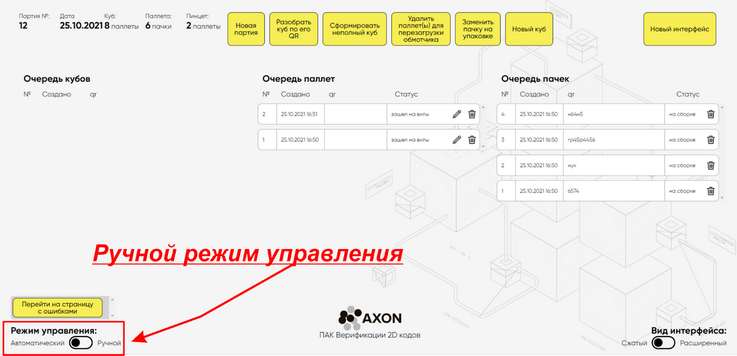

При производстве заготовок, необходимо включить "Ручной режим" работы системы.
В ручном режиме камеры системы перестают распознавать этикетки.

Порядок работы:
1.Выбрать и нажать ползунок опции Режим управления.
2.Удостоверьтесь что ползунок стоит напротив слова "Ручной"

Обязательно, после окончания партии изготовления заготовок, до момента появления первой пачки продукции в пинцете, - верните работу системы в автоматический режим.